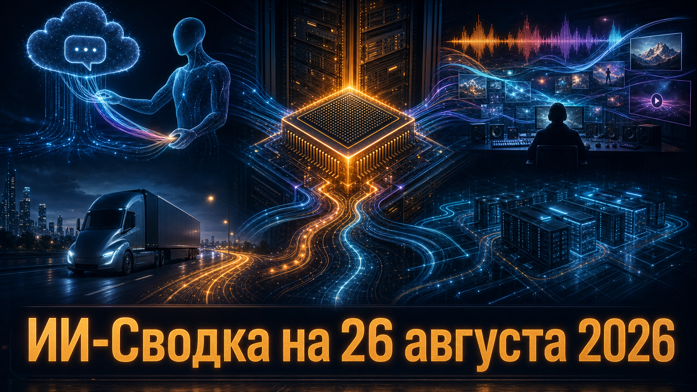

Новостей сегодня меньше, чем обычно
В короткой повестке дня — переход ИИ от отдельных моделей к управляемой инфраструктуре и реальным рабочим действиям. OpenAI раскрыла первые результаты собственного ускорителя, Anthropic связала память чата с агентным режимом Claude, а компании из генеративных медиа и автономной логистики получили новое финансирование для масштабирования.
Общий мотив выпуска — ценность всё чаще создаётся не только качеством модели, но и скоростью её работы, накопленным контекстом, правами на контент и способностью выполнять задачи в физическом мире.
OpenAI представила первые результаты тестирования Jalapeño — собственной платформы ускорителей для inference — и заявила о намерении начать её развёртывание в своей вычислительной инфраструктуре до конца 2026 года. По данным OpenAI, на публичном тесте InferenceX система показала более высокую производительность на ватт и меньшую задержку, чем сопоставляемые решения в заявленном диапазоне.
Это важный шаг к вертикальной интеграции: стоимость, скорость отклика и доступность агентных продуктов зависят не только от моделей, но и от оборудования для массового inference. Однако результаты опубликованы самой компанией, а Jalapeño ещё не работает в значимых производственных объёмах, поэтому независимой оценки реальной эксплуатации пока нет.
Anthropic связала память обычного чата Claude с рабочим режимом Claude Cowork: контекст из обсуждения теперь может переходить в агентный сценарий выполнения задачи. Как сообщает TechCrunch, пользователи могут просматривать, редактировать и удалять сохранённую информацию; память обновляется в ходе разговора, а не только после его завершения.
Изменение уменьшает трение между планированием и исполнением: пользователю не нужно повторно передавать агенту вводные, предпочтения и контекст проекта. Одновременно persistent-memory делает особенно важными настройки приватности и понятный контроль данных; Anthropic заявляет, что ряд чувствительных категорий по умолчанию не сохраняется, но практическое качество и границы механизма ещё предстоит проверить в реальных сценариях.
Stability AI объявила раунд Series B на $76 млн. Среди названных инвесторов — Electronic Arts, Sony Music Group, Universal Music Group, Warner Music Group, AMD Ventures и Pacific Alliance Ventures; компания сообщила, что направит деньги на инструменты для креативного производства, прикладные исследования и профессиональные сервисы. Детали приведены в сообщении Stability AI.
Состав инвесторов делает раунд заметнее его размера: музыкальные правообладатели и игровая индустрия сближаются с разработчиком генеративных медиа-инструментов. Это может поддержать развитие коммерческих сценариев генерации изображений, видео и музыки с более понятной работой с правами, но условия лицензирования, конкретные совместные продукты и объём доступа к данным не раскрыты.
Стартап Gatik привлёк $200 млн на расширение беспилотных среднетоннажных грузоперевозок. Раунд возглавили Qatar Investment Authority и Koch Disruptive Technologies; он последовал за многолетним коммерческим соглашением с PepsiCo. По данным TechCrunch, 41 беспилотный грузовик компании обслуживает маршруты PepsiCo в Далласе, Финиксе и северо-западном Арканзасе.
Для physical AI это сигнал о переходе от испытаний к повторяемой коммерческой логистике на ограниченных маршрутах middle-mile. Gatik также заявляет о $600 млн законтрактированной выручки и планах расширять парк и географию, но эти показатели и параметры контрактов основаны на сообщениях самой компании; независимой детализации экономики эксплуатации публикация не приводит.